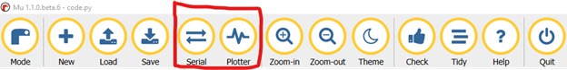

Red Arrows: Capacitive touch sensors (A1-A6 and TX)
Outputs
Speaker
Red LED
Yellow arrows: NeoPixels 0 to 10 (counterclockwise from the top left NeoPixel)
If you haven't done so already, download
and install Mu editor.
In the Mu editor, turn on the Serial display and the Plotter.

If you don't see a tab in the Mu editor named "code.py", click "Load" and navigate to
your CIRCUITPY drive and open the “code” file.
For each of the steps below, delete the code currently in the
“code” file you opened in step 3 of the Learning to Use Your Board
section. Then copy and paste the code from the step you're on into the “code” file. Finally,
click “Save” to watch the code run on your device.
The code below turns the red LED next to the USB cable on and off depending on the
switch's position.
from adafruit_circuitplayground import cp
while True: #run this code forever.
if cp.switch: # checks to see if the switch is on
cp.red_led = True # Turns the red LED on
else:
cp.red_led = False # Turns the red LED off
The code below displays “Pushed button A” or “Pushed button B” to the console in the Mu editor depending on which button you currently have pressed.
import time
from adafruit_circuitplayground import cp
while True:
# checks to see if button A is pressed
if cp.button_a:
print("Button A pressed")
# checks to see if button B is pressed
if cp.button_b:
print("Button B pressed")
time.sleep(0.1) #This delays the execution of the while loop's next iteration by 1/10th of a second